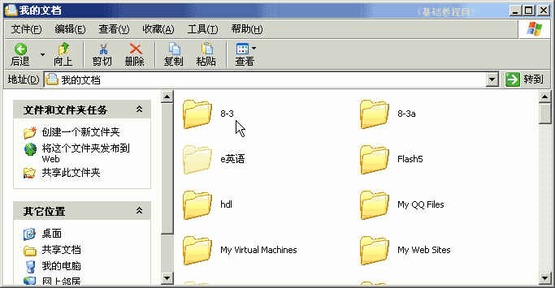
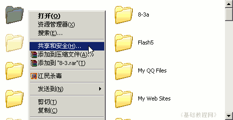
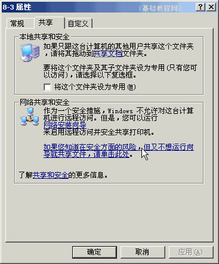
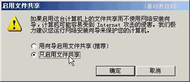
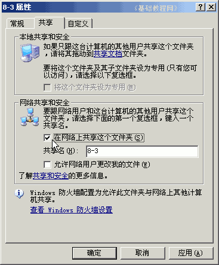
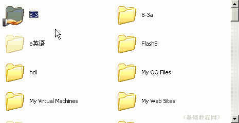
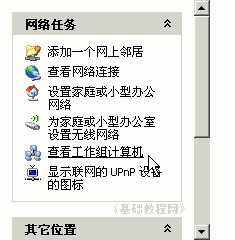
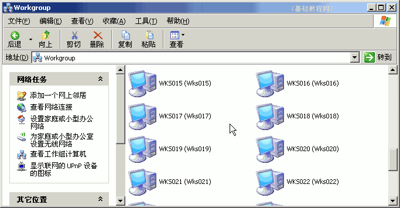
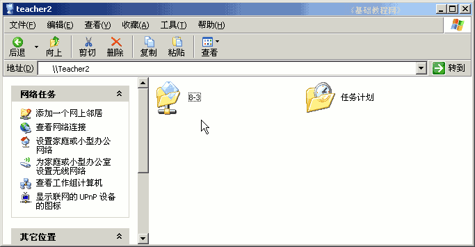

电脑操作基础
三十一、共享文件 返回
在一个几台机子连成的网络里，相互之间可以通过网上邻居共享文件，一般在教室、网吧中都是一个局域网，可以进行网络共享下面我们来看一个练习；
1、找到文件夹
1）打开“我的文档”，找到一个文件夹，也可以新建一个文件夹；

2）瞄准文件夹图标敲右键，选择“共享和安全”命令；

3）在出来的面板中在下面找到一排蓝色文字“如果您知道安全方面的风险...”，点击这个文字连接到下一步；

4）在出来的“启用共享”对话框中，选择下面的“只启用文件共享”，点“确定”按钮继续；

5）在出来的共享面板中间，打勾选中“在网络上共享这个文件夹”，然后点“确定”按钮；

6）这时候在“我的文档”中就可以看到，文件夹的图标上有一个小手，表示是共享的文件夹；

2、网上邻居
1）共享的文件夹通过网上邻居来访问，在桌面上打开“网上邻居”；
2）在窗口的左边找到常用任务，点击中间的“查看工作组计算机”，右边出来各个计算机；

3）在出来的各个计算机中，找到对方的计算机名称，双击打开；

4）这时候就可以看到刚才共享的文件夹了；

如果要取消共享，同样在文件夹上点右键，去掉中间的勾，然后点确定即可，
如果想往共享文件夹里里复制文件，则要把下面的“允许修改”的勾也选中；
本节学习了在WinXP中共享文件夹的的基本方法，如果你成功地完成了练习，请继续学习下一课内容；
本教程由86团学校TeliuTe制作|著作权所有
基础教程网：http://teliute.org/
美丽的校园……
转载和引用本站内容，请保留版权信息和本站链接。